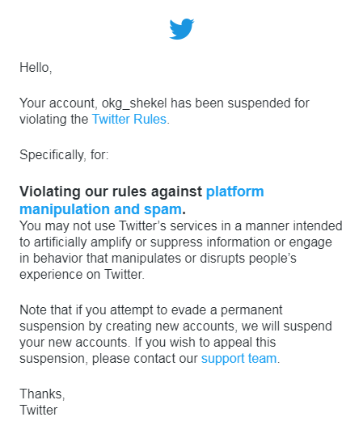
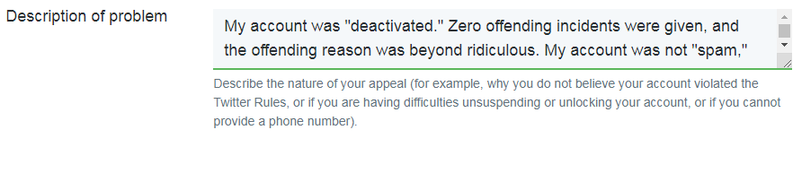
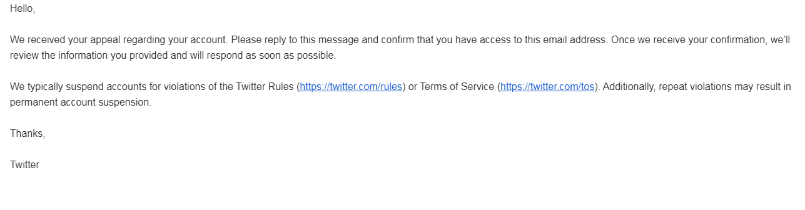
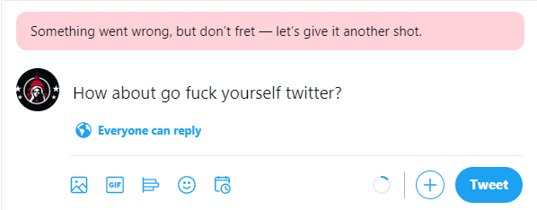

My Twatter Account got Censored
March 2nd, 2021
I never really committed to twitter. After the 2015-16 censorships, it was pretty obvious that if you got moderately popular on twitter, and became a threat to the (((powerful))), you'd just get censored. This is probably why I named my account "BCGoyNews" @okg_shekel, because I kind of thought the whole thing was a joke. If it was before the censorship I'd have gone for some "moderated optics," or whatever.
Nevertheless, I was posting occasionally, posting news articles of mine, as well as the occasional other tweet. Often getting no likes, sometimes just a few. It was a pretty small twatter account, but I thought, any exposure is better than no exposure. Well apparently Big Schlomo was outraged, just outraged, by my little account, and I got censored about 45 minutes ago while writing up a FTN-esque article on (((University Honorary Doctorates))) in Canada.

Pictured: Jonathan Greenblatt of the (((ADL)))
If they've come for me, we can officially say that twitter is just done for literally any purpose whatsoever. There was sort of that window of "well, you might as well not be lazy and expend the energy and at least get a few eyeballs," but at this point it's not worth the time.
However, the good news is that I'm going to be fighting for my account every step of the way. Not because I give even one half of one shit, but because I want to eventually get someone on the other end of the phone so I can record the conversation. Also, I'm just curious what the process is, and wondering if there could be legal repercussions here. After all, they gave me specific reasons for why I was censored, so I want to follow up on that and see what happens.
This is exciting for me is because I've been trying to be active in politics for so long, and this seems sort of like a "hook," if you will. It's one thing to say "we should do a class action lawsuit against SFU for their anti-White '10% for diversity' admissions policy," but if I'm not a lawyer, and don't have much money, there's not much I can do with that. I've wanted something I can reach out and punch for a while now, and I hope this turns into that.

To bring you along on that process, decided that I would show everyone how the twitter censorship process works. First, I received the above picture from an email. The stated reason for my censorship is of course ridiculous. "Platform Manipulation and Spam," is intentionally vague, and is a fallback so they can just ban whomever they want. We all get it.

Next they give you an option to appeal, or at least they did for me. I've seen and heard from lots of people who didn't get this option, but I got this. It's a longer page with some irrelevant details, "which device are you having this problem on," type stuff. The important part is this description of the problem, which is one of the smallest text boxes I have ever encountered on the internet. It's comedicaly small. Like "here goy, type your complaints into this cuck box, LOLOL." My reason was three sentences, and fully half of it is not shown.

Anyway, then they send this insulting email back to you, demanding that you email them back confirming that you are indeed the guy who filled out the appeal and not just some random guy. There is absolutely no point to this of course. It's just another hoop they make you jump through.
They also made sure when doing this to send a "our support team is overloaded right now," message, but I think it happened when I first got the message when logging back into twitter, so I couldn't screencap it. What I could do is go back to twatter to be greeted with an obnoxious "your account is suspended, you will be unable to tweet," message. To prove this, I tried to send a test tweet.

I got that little blurb when I typed in "ggg" as a test, but I thought I'd type this because it's funnier.
So there you have it, that's the process thus far. When they finally get around to emailing me back, I'll write up the rest. If they don't by Sunday, I'll write that up as well.